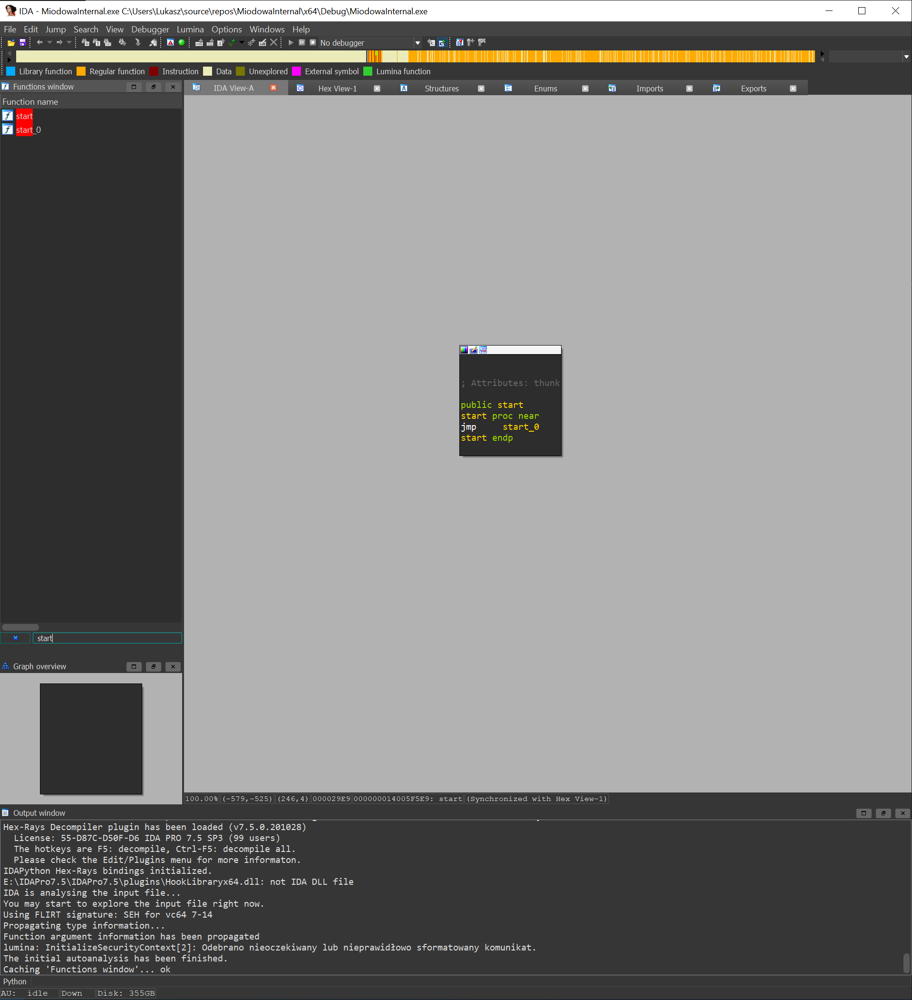
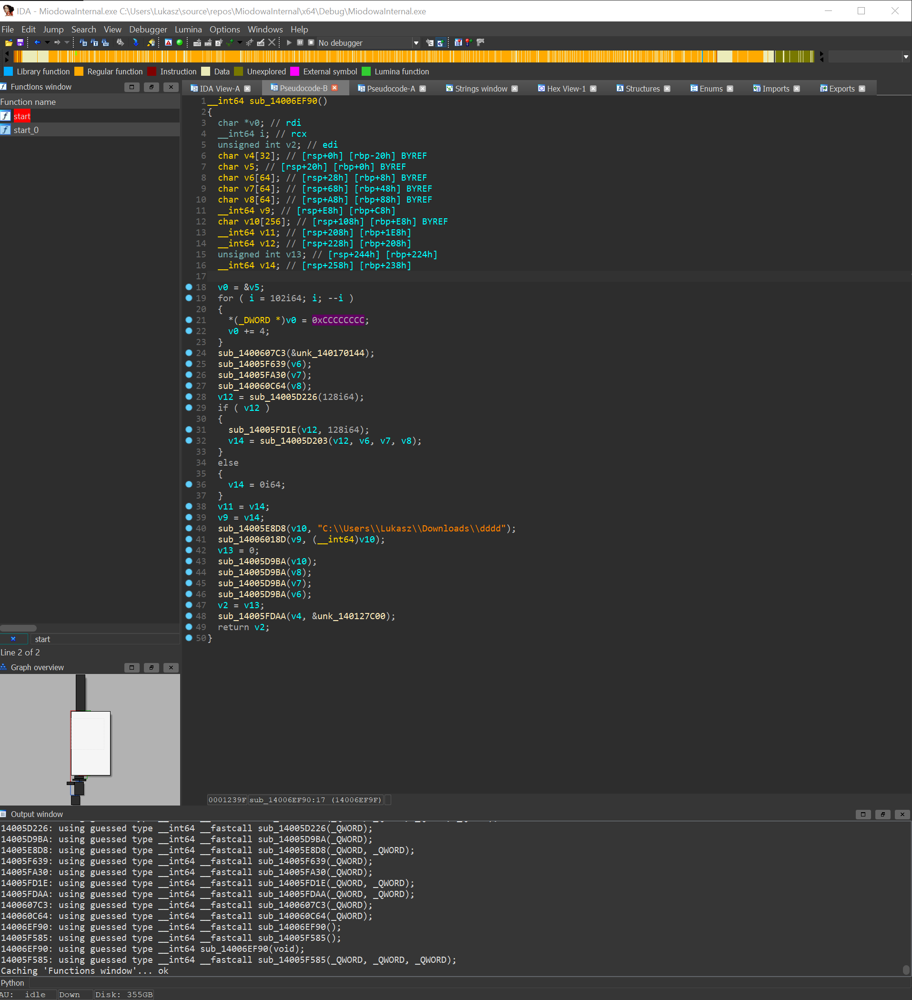

Dekompilacja kodu w programach do reverse engineeringu (inżynierii wstecznej) polega na przekształceniu skompilowanego kodu maszynowego (binarny) z powrotem w bardziej czytelną formę, taką jak kod źródłowy w wysokopoziomowym języku programowania lub przynajmniej w kod asemblera. Jednak proces ten nie jest perfekcyjny, ponieważ kompilacja jest procesem nieodwracalnym — niektóre informacje z kodu źródłowego są tracone podczas kompilacji.
Przykład dekompilacji programem IDA
1. Wczytanie pliku

2. Znalezienie startu programu
3. Odszukanie naszego kodu
Po tym kroku musimy drogą dedukcji definiować struktury które zostały użyte w programie, jakie zawierają właściwości, jak mogą się nazywać funkcje itp.

Tutaj znalazłem funkcje która zwraca nam serial number naszego dysku twardego, domyśliłem sie tego po tym gdyż mamy w funkcji GetVolumeInformation flaga o nazwie "VolumeSerialNumber"